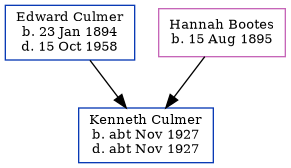

Hannah Culmer (née Bootes) 1895 -
[ Home ] | [ Calendar ] | [ Surnames Index ] | [ Census Index ] | [ Family History ]Hannah Bootes, the wife of Edward Culmer (the first cousin twice-removed on the mother's side of Nigel Horne), was born on Aug 15, 18951 and married Edward (a market gardener with whom she had 1 child, Kenneth E) in Thanet, Kent, England around Nov 19252. On Sep 29, 1939, she was living Flete in Thanet1.
Children
- Kenneth E was born c. Nov 1927
Citations
- 1939 Register - Findmypast (was the wife of the head of the household)
- England & Wales marriages 1837-2008 - Findmypast
Media
England & Wales marriages 1837-2005 - BMD/M/1925/4/AZ/000108/110
Family Tree
Generated by ged2site. Last updated on Jun 11, 2024